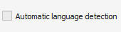
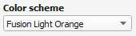
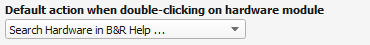
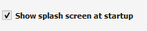

| Value |
Description |
 |
Language of the user interface (GUI). The values of the Systemdump.xml file are not translated, because of the variety of the values! |
|  |
Uses the windows system language if translation exists, if not english is used as default. |
|  |
Sets the color scheme for the user interface (GUI). User color schemes can be added by adding a new .sdtm file into the "themes" folder. |
|  |
Sets the default action that is executed if a hardware module is clicked in the hardware tree. |
 |
Sets if the plugged or configuredhardware module is used, if its opened on the B&R homepage or in the B&R online help. |
|  |
Enables or disables the splash screen on program startup. |